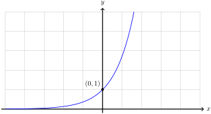
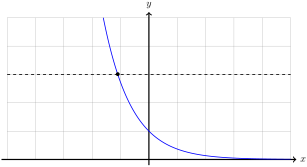
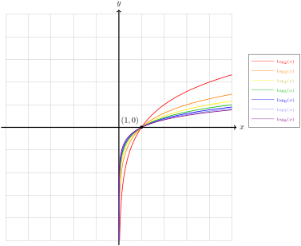
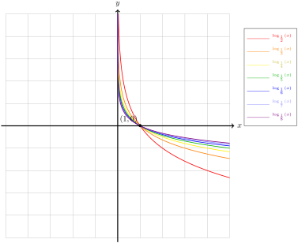

Assume \(a \neq 1\) is a positive real number. The graph of \(\Exp{a} \colon \R \to (0,\infty)\) satisfies The Horizontal Line Test.


Figure5.2.1.The horizontal line test for \(\Exp{a} \colon \R \to (0,\infty)\) with \(1 \lt a\) (left) and \(a \lt 1\) (right).
We can verify this algebraically as follows. Suppose the points \(\left(x_1, a^{x_1}\right)\) and \(\left(x_2, a^{x_2}\right)\) both lie on the same horizontal line. Since they lie on a horizontal line, they must have the same \(y\)-coordinates and so
implies that \(x_1 - x_2 = 0\) and so \(x_1 = x_2\text{.}\) That is to say, the two points are the same point and so any horizontal line intersects the graph in at most one point. This tells us the exponential function is invertible.
Definition5.2.2.The Logarithm with Base \(a\).
Assume \(a \neq 1\) is a positive real number. The logarithm with base \(a\), \(\log_a \colon (0,\infty) \to \R\text{,}\) is the Composition Inverse of \(\operatorname{Exp}{a} \colon \R \to (0, \infty)\text{.}\)
In particular, for every real number \(x\) and every positive real number \(y\text{,}\)
\begin{equation*}
\log_a \circ \Exp{a}(x) = \log_a(a^x) = x
\quad\text{and}\quad
\Exp{a} \circ \log_a(y) = a^{\log_a(y)} = y.
\end{equation*}
Definition5.2.3.The Natural Logarithm.
The natural logarithm, \(\ln \colon (0, \infty) \to \R\text{,}\) is the logarithm with base \(e\text{.}\)
Just as the graph of every exponential function passes through the point \((0,1)\text{,}\) the graph of every logarithm passes through the point \((1,0)\text{.}\)
For the remaining properties, recall that the exponential function turns addition into multiplication and subtraction into division:
As the composition inverse of \(\Exp{a}\text{,}\)\(\log_a\) inverse this relationship by turning multiplication into addition and division into subtraction.
To see this, assume \(y\) and \(y^\prime\) are positive real numbers. Let \(x = \log_a(y)\) and \(x^\prime = \log_a\left(y^\prime\right)\text{.}\) Observe that
because \(\Exp{a}\) and \(\log_a\) are composition inverses. This allows us to transform the logarithm of their product into the sum of their logarithms
The final property is a consequence of these two. While it does not provide anything new, it is frequently useful. If \(y\) is any positive real number and \(r\) is any real number, then we think of \(y^r\) as the product of \(r\) copies of the number \(y\)
\begin{equation*}
y^r = \underbrace{y \cdot y \cdot y \cdots y}_r.
\end{equation*}
If we transform the log of the product into the sum of the logs \(r\) times, then we obtain the expression
using the properties of inverse functions. Unfortunately, none of the properties we have discussed help us to compute \(\log_2(5)\text{.}\) At best, we can observe that
tells us \(2 \lt \log_2(5) \lt 3\text{.}\) If we need a better approximation to the value of \(\log_2(5)\text{,}\) then we will need the assistance of a computer.
On a modern computational tool like Desmos 1 , the underscore symbol _ can be used to enter the command log_2(5) and the result is
However, on most scientific and graphing calculators, there are only buttons labelled log and ln for the logarithms with base \(10\) and base \(e\text{,}\) respectively.
Fortunately, we can use the properties of the logarithm to rewrite a logarithm with base \(a\) as a logarithm with a different base, \(b\text{.}\) Assume \(y\) is a positive real number. Let \(x = \log_a(y)\) so that \(y = a^x\text{.}\) First, rewrite
\begin{equation*}
a = \exp_b \circ \log_b(a) = b^{\log_b(a)}
\end{equation*}
so we have
\begin{align*}
\amp y = a^x = \left(b^{\log_b(a)}\right)^x = b^{x\log_b(a)} \amp\amp \text{Apply}\ \log_b\ \text{to both sides}\\
\amp \log_b(y) = x\log_b(a) \amp\amp \text{Rewrite}\ x = \log_a(y)\\
\amp \log_b(y) = \log_a(y)\log_b(a) \amp\amp\text{Divide both sides by}\ \log_b(a)\\
\amp \log_a(y) = \frac{\log_b(y)}{\log_b(a)}.
\end{align*}
This gives us a way to convert the logarithm with base \(a\) to a logarithm with base \(b\text{.}\)
Formula5.2.5.Base Change for Logarithms.
Assume \(a \neq 1\) and \(b \neq 1\) are positive real numbers. For all positive real numbers \(y\text{,}\)
so the function \(\log_a\) is a vertical scaling of the function \(\ln\text{.}\)
Subsection5.2.3Graphs of Logarithms
Since \(\log_a \colon (0, \infty) \to \R\) is the composition of \(\Exp{a} \colon \R \to (0, \infty)\text{,}\) the graph of \(y = \log_a(x)\) is the reflection of the graph of \(y = \Exp{a}(x)\) across the line \(y = x\text{.}\) Just as for exponentials, the logarithms have the same basic shape depending on whether \(1 \lt a\) or \(a \lt 1\text{.}\) We have plotted the reflections across the \(y\)-axis of the exponential growth functions in Figure 5.1.10 below.

Figure5.2.7.The graphs of the logarithms with base \(2\text{,}\)\(3\text{,}\)\(4\text{,}\)\(5\text{,}\)\(6\text{,}\)\(7\text{,}\) and \(8\)
For any positive real number \(a \neq 1\text{,}\) we can relate the graph of \(y = \log_a(x)\) to the graph of \(y = \log_{1/a}(x)\) using the Base Change for Logarithms. Write \(1/a = a^{-1}\) so that for all positive numbers \(x\text{,}\)
by the Base Change for Logarithms. This tells us that we can graph \(\log_{\frac{1}{2}}(y)\) by reflecting the graph of \(\log_2(y)\) across the \(x\)-axis.
We have plotted the reflections across the \(x\)-axis of the logarithms in Figure 5.2.7 below.

Figure5.2.9.The graphs of the logarithms with base \(1/2\text{,}\)\(1/3\text{,}\)\(1/4\text{,}\)\(1/5\text{,}\)\(1/6\text{,}\)\(1/7\text{,}\) and \(1/8\)